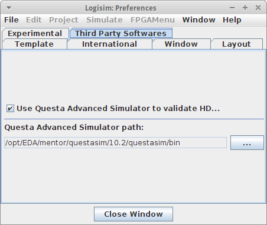

Настройка Questa Advanced Simulator
Внешняя среда моделирования Questa Advanced Simulator используется для компиляции и валидации компонентов VHDL, а также является обязательным требованием для запуска любого моделирования схем, содержащих HDL-блоки.
По умолчанию автоматическая валидация VHDL-кода с помощью Questa Advanced Simulator отключена. Для её
активации перейдите в главное меню | Окно | > | Настройки |, а затем выберите вкладку | Стороннее
ПО |. Включить интеграцию можно, установив флажок Использовать Questa Advanced Simulator для
проверки сущностей VHDL
.

Непосредственно под этой опцией необходимо указать путь к директории, в которую установлен Questa Advanced Simulator. Для этого нажмите кнопку Обзор… и выберите соответствующую папку. Если активировать эту функцию, но оставить поле пути пустым, система принудительно предложит указать его при первой же попытке скомпилировать VHDL-код.
Примечание: Диалоговое окно выбора пути к среде моделирования также откроется автоматически, если вы попытаетесь запустить моделирование схемы, содержащей хотя бы один VHDL-компонент, а среда QuestaSim ещё не настроена.
Далее: Моделирование VHDL.